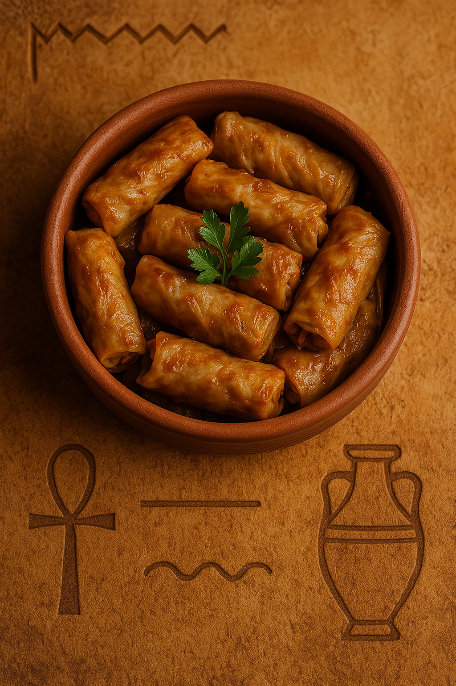

Soft Cabbage Leaves with Herbed Rice
Stuffed cabbage, or "mahshi kromb," is a beloved Egyptian dish made of blanched cabbage leaves filled with a fragrant rice and herb mixture, rolled and slow-cooked until tender.
Ingredients:
- 1 medium cabbage head
- 1 cup short-grain rice
- 1 tomato (finely chopped)
- 1 onion (grated)
- 1/4 cup parsley (chopped)
- 1/4 cup dill (chopped)
- 2 tablespoons tomato paste
- Salt, pepper, cumin
- Olive oil
Instructions:
- Boil cabbage leaves briefly to soften, then cut into rollable pieces.
- Mix rice, tomato, onion, herbs, tomato paste, oil, and spices.
- Place a spoonful of filling on each cabbage piece and roll tightly.
- Layer rolls in a pot, pressing down gently.
- Pour water to just cover the rolls. Simmer for 45–60 minutes until fully tender.
- Serve warm with lemon on the side.